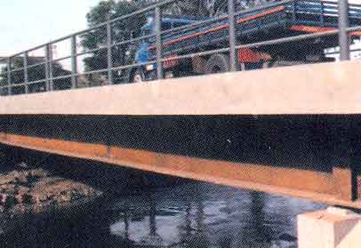
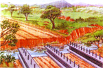
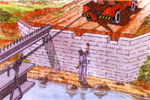
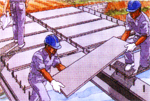
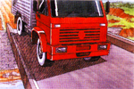

|
|
 |
PONTES METÁLICAS A instalação de pontes metálicas de aço em estradas vicinais e ramais na área rural representa um excelente investimento infra-estrutural para pequenas cidades e comunidades rurais. A Fergel está habilitada a construir e instalar pontes metálicas com vãos de até 36 metros.  FOTO ILUSTRATIVA As pontes metálicas da Fergel podem ser adaptadas às mais variadas situações. E são projetadas com os mais rigorosos padrões e especificações. As pontes metálicas projetadas pela Fergel apresentam diversas vantagens para a sua instalação na região amazônica. Vantagens estruturais das pontes de aço: • A redução do escoramento e das cargas nas fundações; • A facilidade para a duplicação da área de rolagem da ponte; • Podem ser desmontadas e reutilizadas; e, • Podem ser estocadas para situações de emergência.     FOTO ILUSTRATIVA DO PROCESSO DE INSTALAÇÃO DE UM PONTE METÁLICA EM ÁREA RURAL. A Fergel projeta, fabrica e instala as pontes metálicas, oferecendo assistência técnica e manutenção preventiva. Principais etapas para a instalação de pontes metálicas: • preparação do terreno; • implantação e instalação das vigas de sustentação aérea; • modelação e colocação das placas concretadas; • concretagem da laje e; • acabamentos marginais e para-rodas.
As pontes metálicas podem ser estocadas e utilizadas como socorro em áreas sensíveis à desmoronamento ou aluviões de regiões alagadiças típicas da região amazônica.
Consulte a Fergel sobre as avaliações topográficas e de engenharia necessárias para o desenvolvimento de projetos de instalação de pontes metálicas na sua localidade. |
|
Fergel Indústria e Comércio de Ferro e Aço da Amazônia Ltda. © 2006-2011 • Webdesign: Carlos Palácio |